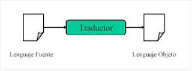
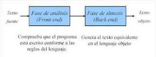

Información del Proyecto
En este proyecto presentaremos lo que anteriormente hicimos en la clase de Lenguajes y Automatas al mismo tiempo demostrando los conceptos con su information y un pequeño ejemoploEsta pagina fue hecha para subir las evidencias de las actividades de la materia lenguajes y autómatas I del instituto tecnológico TESVG de la carrera de ingenieria de sistemas computacionales
los integrantes de este esta pagina son los siguientes:
- JOSE WILIAMS DORANTES VAZQUEZ
- JUAN CARLOS ROSALES GALINDO
- ERICK VILLA CALVO
- LEONARDO HAZEL DÍAZ CARBAJAL
- YASSEL YAIR GONZALEZ QUIROZ
Breve descripción de las unidades
-
UNIDAD 1
¿A que se le llama un lenguaje formal? conjunto de palabras (cadena de caracteres) de longitud finita formado a partir de un alfabeto (conjunto de caracteres finitos).
¿Cuales son las diferencias entre lenguajes y autómatas y sus características? un lenguaje es un conjunto de caracteres determinados que forman sentencias e instrucciones, mientras que los autómatas son los componentes (ordenadores digitales) que permiten manejar los lenguajes por medio de instrucciones determinadas y finitas.
¿Cual es la historia y cronología de lenguajes y autómatas? En los años 30 se desarrolla la teoría de la computabilidad a base de los descubrimientos de godel, turing, post, church y kleene. En 1931 godel desarrolla la teoria de la incompletitud En 1936 church propuso un esquema de funciones definibles Se desarrolla las funciones f-cursivas de herbrand-godel Turing maneja su concepto abstracto de maquina de funciones calculables conocido como tesis de turing
-
UNIDAD 2
Utilizado en muchos lugares como un lenguaje para describir patrones en texto que son sencillos pero muy útiles. Pueden definir exactamente los mismos lenguajes que los autómatas pueden describir: Lenguajes regulares. Ofrecen algo que los autómatas no: Manera declarativa de expresar las cadenas que queremos aceptar. Dado un alfabeto Dado un alfabeto Σ, una , expresión regular sobre expresión regular sobre Σ se define de forma recursiva:
ER primitivas: Φ, λ, {a | a ЄЄЄ Σ Є} Si α y β son ER, entonces son también ER: α + β (unión), α β (concatenación), α* (cierre), (α). No existen otras reglas para la construcción de ER sobre Σ. Ejemplos de usos.
HTML
BOOTSTRAP
JAVASCRIPT
CSS
Introducción a la Teora de Lenguajes Formales
1.1 Alfabeto
Símbolo: Es una entidad abstracta (indivisible) ya sea letras, dígitos o caracteres. Los símbolos también pueden estar formados por varias letras o caracteres.
Ejemplos:
V1= { a, b, c, d, ... z } V2 = { 0, 1 } Java = { {, }, for, if, else, while, ...
Alfabeto: Conjunto no vació cuyos elementos se llaman símbolos, se denomina por ∑
1.2 Cadenas
Cadena o palabra: Secuencia finita de símbolos de un determinado alfabeto. Cadena vacía: Denotada por λ. La palabra vacía pertenece a los lenguajes universales de todos los alfabetos posibles. Longitud de cadena: Es el numero de símbolos que contiene.
| λ | = 1 | aba | = 3 | 010 | = 3
Ejemplo: Si w = abra y v = cada Entonces wvbra = abracadabra
1.3 Lenguaje, tipos y herramientas
Lenguaje: Subconjunto del universo del discurso. Conjunto de palabras de un determinado alfabeto. "El alfabeto Σ es también un lenguaje sobre Σ.".
Lenguaje vació: Es aquel que no contiene la cadena vacía ni ninguna otra cadena. Cardinal ( { Ø } ) = 0 Cardinal ( { λ } ) = 1
Clausula (cierre) positiva de un lenguaje: El lenguaje obtenido uniendo el lenguaje L con todas sus potencias posibles, excepto L0. Obviamente, ninguna clausura positiva contiene la palabra vacía, a menos que dicha palabra esté en L. Puesto que el alfabeto Σ es también un lenguaje sobre Σ, puede aplicársele esta operación. Se verá entonces que: L+ = L1 U L2 U L3.... W(∑) = Lenguaje universal de ∑. ∑+ = W(∑) - { λ }
1.4 Estructura de un traductor
Un traductor es un programa que tiene como entrada un texto escrito en un lenguaje (lenguaje fuente) y como salida produce un texto escrito en un lenguaje (lenguaje objeto) que preserva el significado de origen.
En el proceso de traducción se identifican dos faces principales:
Expresiones Regulares
Utilizado en muchos lugares como un lenguaje para describir patrones en texto que son sencillos pero muy útiles. Pueden definir exactamente los mismos lenguajes que los autómatas pueden describir: Lenguajes regulares. Ofrecen algo que los autómatas no: Manera declarativa de expresar las cadenas que queremos aceptar. Dado un alfabeto Dado un alfabeto Σ, una , expresión regular sobre expresión regular sobre Σ se define de forma recursiva:.
2.1 Definición formal de una ER
ER primitivas: Φ, λ, {a | a ЄЄЄ Σ Є} Si α y β son ER, entonces son también ER: α + β (unión), α β (concatenación), α* (cierre), (α). No existen otras reglas para la construcción de ER sobre Σ. Ejemplos de usos. Comandos de búsqueda, e.g., grep de UNIX. sistema de formato de texto: Usan notación de tipo expresión regular para describir patrones. Convierte la expresión regular a un DFA o un NFA y simula el autómata en el archivo de búsqueda. Generadores de analizadores – Léxicos. Como Lex o Flex. Los analizadores léxicos son parte de un compilador. Dividen el programa fuente en unidades lógicas (tokens) divide el programa fuente en unidades. Produce un DFA que reconoce el token. Las expresiones regulares denotan lenguajes.
2.2.-Diseño en ER.
Unión o Alternativa: Consideremos dos lenguajes diferentes definidos sobre el mismo alfabeto L1 ⊂ W(∑) y L2 ⊂ W(∑). Se denomina unión de ambos lenguajes al lenguaje formado por las palabras de ambos lenguajes: L1 U L2={ x | x ∈ L1 ó x ∈ L2} Concatenación: Consideremos dos lenguajes definidos sobre el mismo alfabeto, L1 y L2. La concatenación o producto de estos lenguajes es el lenguaje L1 L2= { xy / x ∈ L1 y x ∈ L2} Las palabras de este lenguaje estarán formadas al concatenar cada una palabra del primero de los lenguajes con otra del segundo. La concatenación de lenguajes con el lenguaje vació es ΦL = L Φ = Φ Potencia de un lenguaje: Se define la potencia i-ésima de un lenguaje a la operación de concatenarlo consigo mismo i veces. Li= LLL ....L |------------| i Clausura positiva de un lenguaje: Se define la clausura positiva de un lenguaje L: ∞ L + = U L i i=1 Lenguaje obtenido uniendo el lenguaje; con todas sus potencias posibles excepto Lº. Si L no contiene la palabra vacía, la clausura positiva tampoco
2.3 Aplicaciones en problemas reales.
Una de las principales aplicaciones de los hermanos Deitel, son las expresiones regulares que facilitan la construcción de un compilador. A menudo se utiliza una expresión regular larga y compleja para validar la sintaxis de un programa. Si el código del programa no concuerda con la expresión regular, el compilador sabe que hay un error de sintaxis dentro del código. Generalmente convierten la expresión regular a un autómata finito no determinista y después construyen el autómata finito determinista. Otra aplicación del mismo libro es en los editores de texto. También encontramos a las expresiones regulares en la biología molecular. También hay esfuerzos importantes para tratar de representar cadenas como generadas por expresiones regulares o por lenguajes regulares.

integrantes
Alumnos de la carrera ingenieria en sistemas computacionales frupo 3601 que desarrollaron esta pagina
Contacto
contactanos
Nuestra dirección
C. Amaxalco S/N, San Miguel, Zumpahuacan Mexico
Nuestro correo
545mkds5cp@gmail.com
Llámenos
+52 722 419 2080